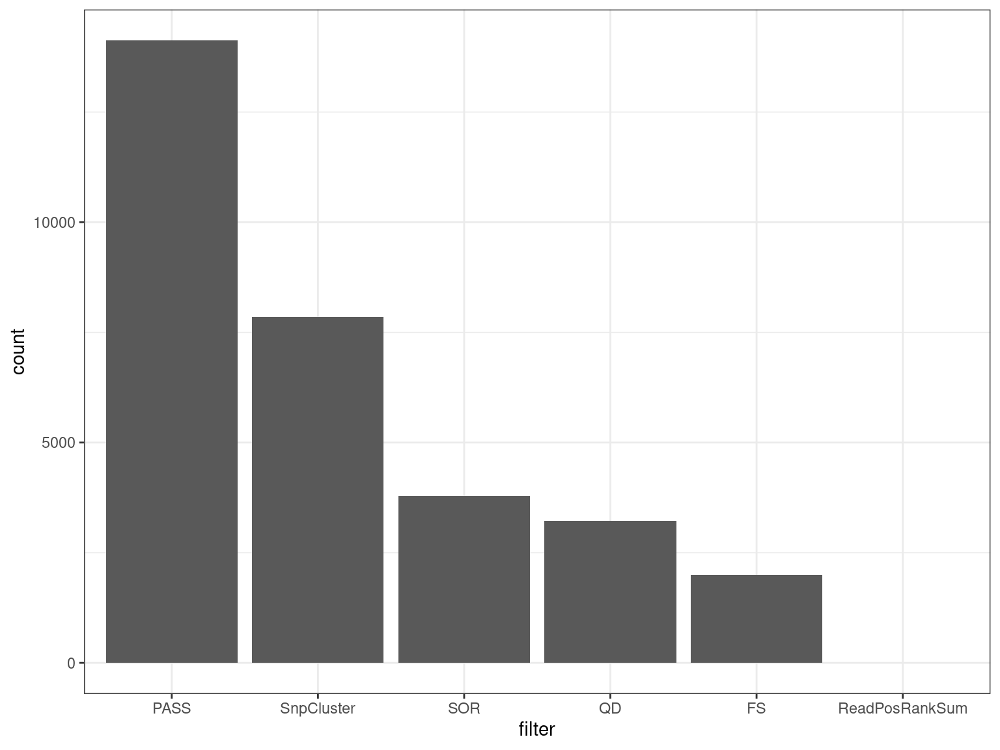

suppressPackageStartupMessages({
## Common
library(tidyverse)
library(magrittr)
library(future.apply)
library(here)
library(AnnotationHub)
library(purrr)
library(scales)
library(kableExtra)
library(tictoc)
library(ggrepel)
library(RColorBrewer)
library(ggpubr)
library(pander)
library(rmarkdown)
## Project specific
library(VariantAnnotation)
library(Gviz)
library(zoo)
library(msigdbr)
library(viridis)
})if (interactive()) setwd(here::here())
theme_set(theme_bw())
cores <- availableCores() - 1source("~/bioinformatics/bioToolkit/lbFuncs.R")## Choose either local or remote project directory
# projDir <- here()
projDir <- "/hpcfs/users/a1647910/211001_APOE_Mm"options(ucscChromosomeNames = FALSE)ens_species <- "Mus musculus"
ens_release <- "104"
ens_assembly <- "GRCm39"ah <- AnnotationHub() %>%
subset(species == ens_species) %>%
subset(rdataclass == "EnsDb")
ahId <- ah$ah_id[str_detect(ah$title, ens_release)]
ensDb <- ah[[ahId]]chrInfo <- getChromInfoFromEnsembl(ens_assembly, release = ens_release) %>%
dplyr::filter(coord_system == "chromosome")
primary_chrs <- chrInfo$namegenes <- genes(ensDb, filter = SeqNameFilter(primary_chrs))
mcols(genes) <- mcols(genes)[
c("gene_id", "gene_name", "gene_biotype", "entrezid")
]exons <- exonsBy(ensDb, by = "gene", filter = SeqNameFilter(primary_chrs))metadata <- read_tsv(here("misc/SYNAPSE_METADATA_MANIFEST.tsv")) %>%
left_join(read_csv(here("misc/metaAPOE.csv"))) %>%
dplyr::select(
sample = specimenID, species, genotypeBackground, litter, dateBirth,
dateDeath, genotype = Genotype, sex = Sex, age = Age, lane, basename = name,
modelSystemName, individualID, study
) %>%
dplyr::filter(str_detect(sample, "_3M_")) %>%
mutate(basename = str_remove(basename, ".bam_R(1|2).fastq.gz")) %>%
distinct(sample, .keep_all = TRUE) %>%
mutate(
group = as.factor(paste0(genotype, "_", age, "_", sex)),
genotype = as.factor(genotype)
) %>%
dplyr::arrange(genotype, group)genoCols <- metadata$genotype %>%
unique() %>%
length() %>%
brewer.pal("Set1") %>%
setNames(unique(metadata$genotype))samples_byGroup <- metadata %>%
split(f = .$group) %>%
sapply(function(x){
pull(x, sample)
}, simplify = FALSE)Load in the DE data from our analysis here
dgeList <- readRDS(here("files/dgeList.Rds"))topDE <- readRDS(here("files/topTables_cqn.Rds")) %>%
sapply(function(x){
dplyr::filter(x, chromosome %in% primary_chrs) %>%
droplevels()
}, simplify = FALSE)deGenes <- sapply(topDE, dplyr::filter, DE, simplify = FALSE)vcf_file <- file.path(
"/hpcfs/users/a1647910/211001_APOE_Mm/analysis-variants_new/results/07_variants/5_filter/all_samples.vcf.gz"
)
svp <- ScanVcfParam(fixed = c("FILTER"), info = NA, geno = c("GT", "GQ"))
vcf <- suppressWarnings({
readVcf(vcf_file, param = svp)
})gr <- rowRanges(vcf)
mcols(gr) <- mcols(gr) %>%
as_tibble() %>%
dplyr::select(-paramRangeID)
gr <- gr %>%
as.data.frame() %>%
droplevels() %>%
GRanges()Let’s first check
gr$FILTER %>%
lapply(str_split_1, ";") %>%
unlist() %>%
table() %>%
as_tibble() %>%
set_names(c("filter", "count")) %>%
dplyr::arrange(desc(count)) %>%
mutate(filter = factor(filter, levels = filter)) %>%
ggplot(aes(filter, count)) +
geom_bar(stat = "identity")